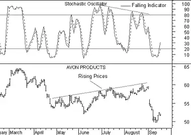

Stochastic Oscillator
Overview
Sto.chas.tic (sto kas'tik) adj. 2. Math. designating a process having
an infinite progression of jointly distributed random variables.
--- Webster's New
World Dictionary
The Stochastic Oscillator compares where a security's price closed relative to its price range over a given time period.
Interpretation
The Stochastic Oscillator is displayed as two lines. The main line is called "%K." The second line, called "%D," is a moving average of %K. The %K line is usually displayed as a solid line and the %D line is usually displayed as a dotted line.
There are several ways to interpret a Stochastic Oscillator. Three popular methods include:
- Buy when the Oscillator (either %K or %D) falls below a specific level (e.g., 20) and then rises above that level. Sell when the Oscillator rises above a specific level (e.g., 80) and then falls below that level.
- Buy when the %K line rises above the %D line and sell when the %K line falls below the %D line.
Example
The following chart shows Avon Products and its 10-day Stochastic.
 I drew "buy" arrows when the %K line fell below, and
then rose above, the level of 20. Similarly, I drew "sell" arrows when the %K line rose
above, and then fell below, the level of 80.
I drew "buy" arrows when the %K line fell below, and
then rose above, the level of 20. Similarly, I drew "sell" arrows when the %K line rose
above, and then fell below, the level of 80.
This next chart also shows Avon Products.
 In this example I drew "buy" arrows each time the %K line rose above the %D
(dotted). Similarly, "sell" arrows were drawn when the %K line fell below the %D line.
In this example I drew "buy" arrows each time the %K line rose above the %D
(dotted). Similarly, "sell" arrows were drawn when the %K line fell below the %D line.
This final chart shows a divergence between the Stochastic Oscillator and prices.
 This is a classic divergence where prices are headed higher, but the underlying indicator (the Stochastic Oscillator) is moving lower. When a divergence occurs between an indicator and prices, the indicator typically provides the clue as to where prices will head.Calculation
The Stochastic Oscillator has four variables:
%K Periods.
This is the number of time periods used in the stochastic calculation.%K Slowing Periods.
This value controls the internal smoothing of %K. A value of 1 is considered a fast stochastic; a value of 3 is considered a slow stochastic.%D Periods.
This is the number of time periods used when calculating a moving average of %K. The moving average is called "%D" and is usually displayed as a dotted line on top of %K.%D Method.
The method (i.e., Exponential, Simple, Time Series, Triangular, Variable, or Weighted) that is used to calculate %D.
The formula for %K is:

For example, to calculate a 10-day %K, first find the security's highest-high and lowest-low over the last 10 days. As an example, let's assume that during the last 10 days the highest-high was 46 and the lowest-low was 38--a range of 8 points. If today's closing price was 41, %K would be calculated as:

The 37.5% in this example shows that today's close was at the level of 37.5% relative to the security's trading range over the last 10 days. If today's close was 42, the Stochastic Oscillator would be 50%. This would mean that that the security closed today at 50%, or the mid-point, of its 10-day trading range.
The above example used a %K Slowing Period of 1-day (no slowing). If you use a value greater than one, you average the highest-high and the lowest-low over the number of %K Slowing Periods before performing the division.
A moving average of %K is then calculated using the number of time periods specified in the %D Periods. This moving average is called %D.
The Stochastic Oscillator always ranges between 0% and 100%. A reading of 0% shows that the security's close was the lowest price that the security has traded during the preceding x-time periods. A reading of 100% shows that the security's close was the highest price that the security has traded during the preceding x-time periods.